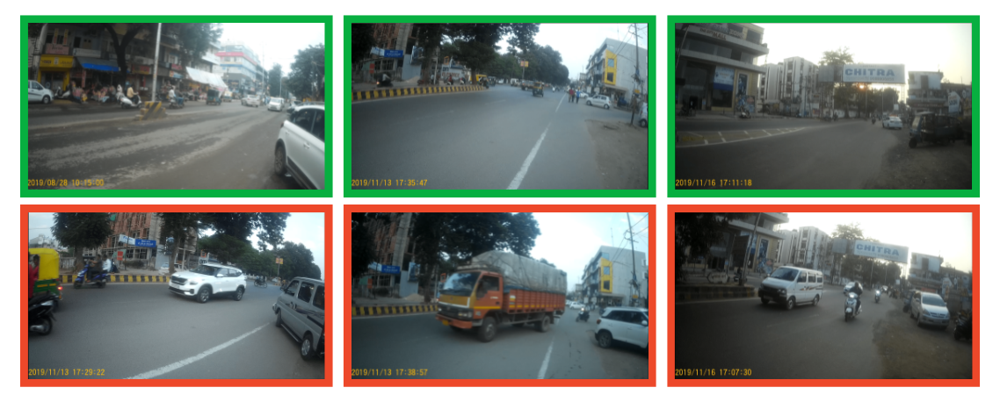
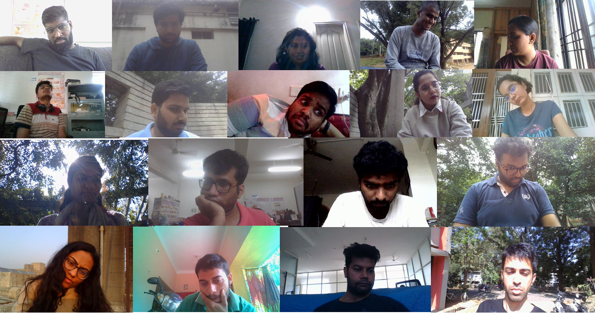

Through personal projects and research internships, I have realized that collecting and managing
new data beyond existing academic datasets is as important as learning algorithms for modern ML problems! So, I am very interested in
research that involves creating novel datasets and applying ML algorithms to solve real‑world problems. Find below about
some of the dataset-creation works that I have been a part of.

Example frames from INDRA dataset (green=safe, red=unsafe).
INDRA (INdian Dataset for RoAd crossing)
Entirely collected by me using SJCam SJ4000 12MP action camera.
INDRA dataset consists of 104 videos (>26k frames) recording Indian traffic scenarios from pedestrian viewpoint.
Each frame of the dataset is labelled as safe/unsafe for crossing road.
Additionally, vehicle bounding boxes detected by state of the art RetinaNet for each frame of the dataset are released as
auxiliary data.

Sample images from PARKS-Gaze Evaluation Subset.
PARKS-Gaze - A Precision-focused Gaze Estimation Dataset in the Wild under Extreme Head Poses
This appearance-based gaze estimaion dataset focuses on two things which earlier datasets did not address: precision and wide head pose
angles. This is the largest in-the-wild appearance-based gaze estimation dataset in terms of total number of frames collected.
My contributions:
Involved in building initial parts of the data collection software during my internship at
I3D Lab, IISc Bangalore.
Volunteered as one of the 18 participants for data-collection.
With an aim to enable blind people to walk safely, we are collecting data of outdoor scenes from pedestrian view-point (work in progress
currently).
We plan to use this data to learn an image segmentation model (to detect roads, sidewalks, crosswalks, potholes etc) and integrate it into Ximira's
AI based visual assistance system for the blind.